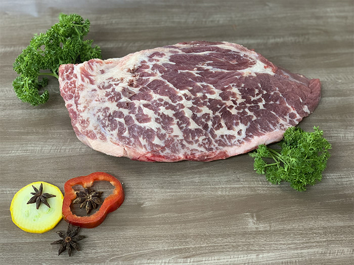

El Morrillo

Algunos de los mejores usos para este corte son
- la elaboración guisos de larga cocción
- consumir molida
para cocinar este corte de buena manera se requieren los siguientes ingredientes
- 1 pieza de morrillo de cerca de 2 kg
- 1 cucharada de sopa de aceite
- 3 cucharadas de sopa de verdura picada
- 2 cucharadas de sopa de ajo picado
- 1 litro de caldo de carne (o 3 cubitos de caldo de carne)
- 3 cucharadas de sopa de salsa inglesa
- Sal al gusto
- Pimienta negra molida al gusto
y se llevaran a cavo los siguientes pasos:
Con un cuchillo fino y bien afilado, agujeree superficialmente el morrillo.
Esto ayudará a la carne a absorber mejor los sabores de los condimentos.
Caliente el aceite en la olla de presión y rehogue la cebolla y el ajo.
Tenga cuidado para no quemarlos, ya que queremos dejarlos levemente fritos.
Si usa caldo de carne, ahora ponga 2 vasos en la olla. Si va a usar cubitos de caldo
de carne, ponga dos vasos de agua en la olla de presión para disolverlos ahora.
A continuación, posicione la pieza de morrillo condimentada con sal y pimienta negra en la
olla de presión.
Cubra con el resto de caldo de carne o agua hasta tener unos 4 dedos de líquido sobre la carne.
Tape la olla de presión y deje cocinar alrededor de dos horas. Un consejo: después de que tome presión
, deje la llama a fuego bajo porque la olla seguirá con la misma temperatura que estaba con el fuego alto.
Pasado este tiempo de cocimiento en la olla de presión, vamos a finalizar el morrillo en el horno.
Si desea guarniciones, recomendamos llevarlo al horno con papas.
Ponga el morrillo en una asadera antiadherente o untada con aceite.
Condimente nuevamente con sal y pimienta y frote la salsa inglesa por toda la carne.
Lleve al horno precalentado a 200ºC por otros 30 minutos.
Ahí basta cortar en fetas y servir.